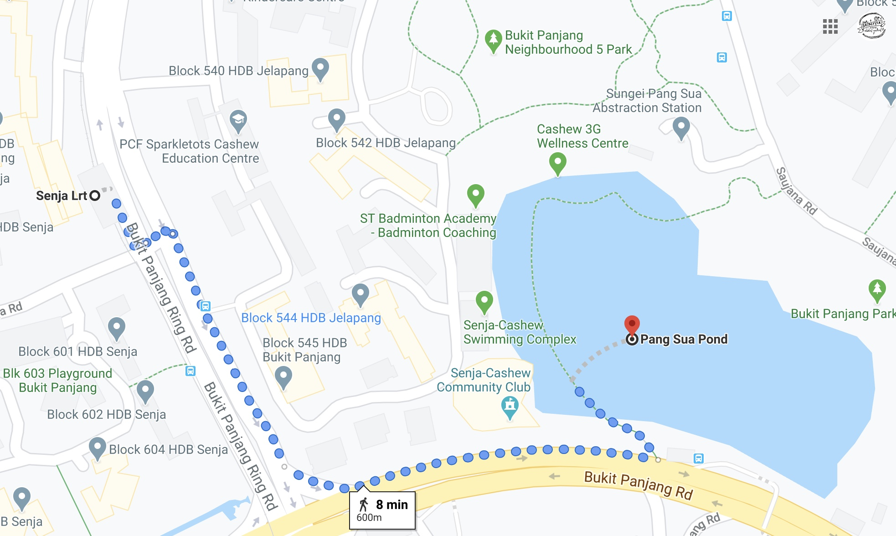

The nearest bus stop is "Opp Lompang Rd" Bus Stop ID: 44241. It stops exactly where Pang Sua Pond is so you don't have to walk an extra distance to get there.
The buses that stop there are: 184, 187, 190, 700, 700A, 970, 973.
The nearest LRT station is Senja LRT. It would take about 13 minutes to walk 850m to get there.
